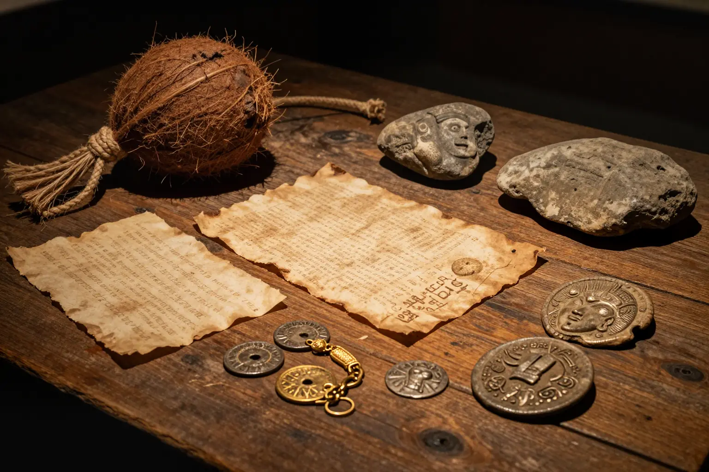

The Oak Island Money Pit: 200 Years of Treasure Hunting

A mysterious pit on a Nova Scotia island has captivated treasure hunters for over two centuries. Elaborate flood tunnels, tantalizing artifacts, and a legendary curse keep the search alive.
In 1795, a teenager named Daniel McGinnis noticed strange lights on Oak Island, Nova Scotia. Investigating the next morning, he found a circular depression in the ground and a weathered oak branch hanging from a block and tackle above it. He and two friends began digging — and uncovered something that would spark over two centuries of obsession.
At depths of 10, 20, and 30 feet, they found layers of oak planks separated by putty-like clay. At 50 feet, coconut fiber — a material completely foreign to Nova Scotia. At 90 feet, a stone inscribed with mysterious symbols was reportedly found. The decoded message allegedly read: "Forty feet below, two million pounds are buried."
Then they hit water. The pit flooded rapidly, rising to within 33 feet of the surface despite continuous bailing. The treasure hunters had unwittingly triggered an elaborate flood tunnel system connecting the pit to the ocean — a booby trap designed to keep whatever lies at the bottom hidden forever.
Evidence
Research on the Oak Island Money Pit draws from excavation records, carbon dating results, and geological surveys. The quality of evidence varies — early accounts rely on secondhand reports, while modern investigations use scientific methods.
Over the centuries, several intriguing artifacts have been recovered:
- 🌴 Coconut fiber found at 50 feet depth has been carbon-dated to between 1260 and 1400 CE, predating European colonization of the area by centuries.
- 📜 Parchment and gold chain: In 1897, a drill reportedly brought up a fragment of parchment with ink markings and a small piece of gold chain.
- 🪙 Ancient coins: The Lagina brothers have found Roman-era coins and a lead cross potentially dating to the medieval period.
- 📡 Sonar anomalies: Modern scans have detected what appear to be man-made chambers deep underground.
The Money Pit's layered structure with flood tunnels connecting to the ocean
🌊 The Flood Tunnel System
The pit connects to the ocean through hand-dug flood tunnels lined with coconut fiber and beach stones. Even modern pumps struggle to keep the water out — a 200-year-old engineering marvel that still works today.
Competing Explanations
Competing theories about the Money Pit reflect different assumptions about who built it and why.
The pirate treasure theory: Captain Kidd or other pirates buried their loot on the island in the late 17th century. The elaborate flood tunnels were designed to protect the treasure from being recovered by anyone who didn't know the full layout.
The Knights Templar theory: Some researchers believe the Knights Templar hid religious artifacts (possibly including the Holy Grail or Ark of the Covenant) on the island after the order was suppressed in 1307. The coconut fiber and sophisticated engineering would fit this timeline.

Notable artifacts recovered from Oak Island include ancient coins, parchment, and coconut fiber
The natural geology theory: Skeptics argue the "pit" is a natural sinkhole or geological formation, and the artifacts are coincidental. The flooding could be explained by natural underground water channels rather than deliberate engineering.
💰 The Cost of Obsession
An estimated $25+ million has been spent searching Oak Island since 1795, making it the most expensive treasure hunt in history. The Lagina brothers' operation alone costs millions per season.
Open Questions
Despite over 200 years of searching, fundamental questions remain unanswered.
Is there actually treasure? No definitive treasure has been found, though artifacts suggest someone deliberately built the pit's structure. The 2025-2026 seasons of "The Curse of Oak Island" have revealed new tunnel systems and coin discoveries that keep hope alive.
The curse: Legend says seven people must die before the treasure is found. As of 2026, six people have died during treasure hunting operations on the island. Whether coincidence or something more, the curse adds an eerie dimension to an already fascinating mystery.
Whether the Money Pit holds pirate gold, Templar relics, or nothing at all, it remains one of the world's most enduring treasure mysteries!
📖 Recommended Reading
Want to learn more? Check out Secret Treasure of Oak Island: The Amazing True Story of a Centuries-Old Treasure Hunt by D'Arcy O'Connor on Amazon for a deeper dive into this fascinating topic. (As an Amazon Associate, we earn from qualifying purchases.)
References & Further Reading
- Oak Island Treasure — Historical records and research
- History Channel: The Curse of Oak Island
- CBC News: Oak Island developments
Editorial note: reconstructions are continuously revised as imaging and inscription studies improve. See our Editorial Policy.